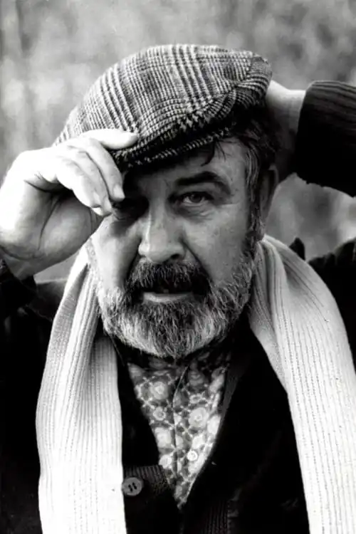

Бухайм народився 6 лютого 1918 року в Веймарі (Тюрингія, Німеччина), був сином художниці Шарлотти Бухайм. Вона була не одруженою та жила з батьками. До 1924 року вони жили в Веймарі, після в Рохліці до 1932-го, потім в Хемніці . Уже тоді Бухайм-молодший підробляв в газетах і брав участь у художній виставці 1933 року, коли йому було всього 15.
Люблячи подорожувати, разом з братом він дістався до Чорного моря, по Дунаю на каное. Після того як отримав атестат зрілості в 1937-му, деякий час жив в Італії, де написав свою першу книгу Tage und Nächte steigen aus dem Strom. Eine Donaufahrt. ("Дні і ночі встають з річки. Подорож по Дунаю"), яка була видана в 1941 році. Бухайм вивчав мистецтво в Дрездені і Мюнхені в 1939-му.
Мобілізований в армію в 1940 році. Був офіцером союзу пропаганди німецького військово-морського флоту, працював військовим кореспондентом, описуючи свої походи на різних кораблях, малював і багато фотографував. Як молодший лейтенант брав участь восени 1941 року в поході U-96, написав про це коротку повість "Die Eichenlaubfahrt", за що командир човна отримав Лицарський хрест Залізного хреста з Дубовим Листям, закінчив війну обер-лейтенантом. Після війни працював художником, володів галереєю, писав книги про художників, наприклад Пікассо, збирав роботи французьких та німецьких експресіоністів, знімався у кіно. Найбільшу популярність здобув після виходу роману "Das Boot" (1973), який став світовим бестселером і основою фільму "Підводний човен". Помер від серцевої недостатності 22 листопада 2007 року.